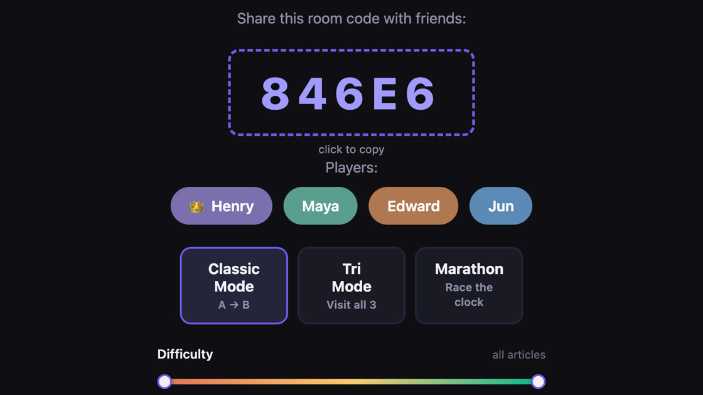
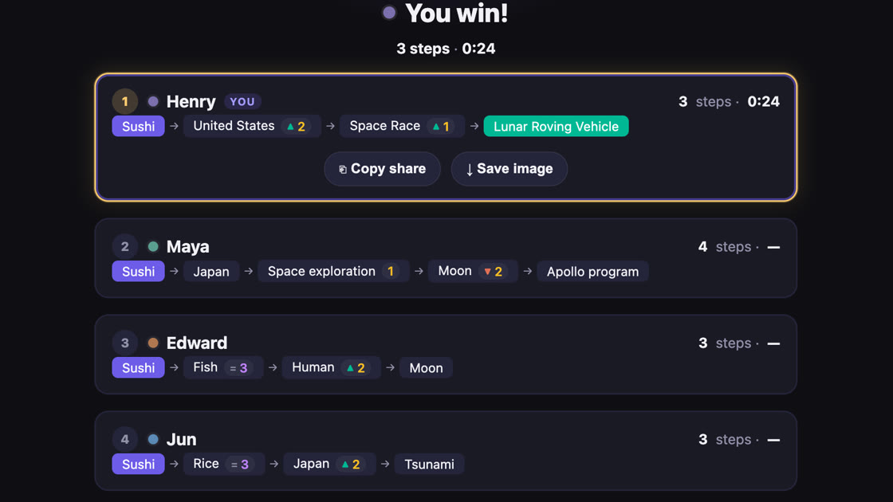
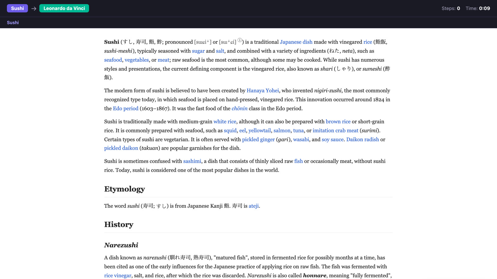

WikiSpeedrun
A browser game where players race each other through Wikipedia using only in-article links. Room-code lobbies with live position and timer sync, and three game modes. I built all of it: the server, the real-time layer, and the analytics stack behind it.
- players
- 50,000
- average engagement
- 13m 47s
- GitHub stars
- 160+


One race from Sushi to Lunar Roving Vehicle. The bar under the breadcrumbs places every player by how many clicks they are from the target, and the green edge is the finish. This race was staged on a local server for the recording: the host is a real browser and the three rivals are clients that join through the same API, every move follows a real link, and the server’s anti-cheat accepted all of them. The push-in on the bar was added after capture.
How that race was won
Every player starts on Sushi, three clicks from the target. The number after each article is how many clicks away it left them.
| Player | Click 1 | Click 2 | Click 3 | Click 4 | Finish |
|---|---|---|---|---|---|
| Henry | United States 2 | Space Race 1 | Lunar Roving Vehicle | Won in 3 clicks, 0:24 | |
| Maya | Japan | Space exploration 1 | Moon 2 | Apollo program 1 | 1 click short |
| Edward | Fish 3 | Human 2 | Moon 2 | 2 clicks short | |
| Jun | Rice 3 | Japan 2 | Tsunami 3 | 3 clicks short |
Outlined one click from the target.
Go wide first
The body of the Sushi article links to about 290 other articles, none of them near a lunar rover. United States links to more than 1,500. The first click buys reach: it took the winning route from three clicks out to two.
Read the distance
Maya was one click away on her second move. Space exploration links straight to Lunar Roving Vehicle, but she clicked Moon and fell back to two. The game shows that cost the moment a page loads, so a wrong turn is visible immediately.
Watch the bar
The bar shows every rival in clicks, not just who is ahead. A pill one click from the line means the next click can end the race. Maya was back at one click when the winning link was clicked.
How it’s built
- One process, one dependency
- The server is Node’s built-in
httpmodule, about 4,500 lines, and its only package is the Postgres driver. The client is a single 10,000-line HTML file. 218 commits so far. - Real time without WebSockets
- Server-Sent Events push room state to every player, and moves come back as ordinary POST requests. Each session carries a CSRF token and a reconnect token, so a dropped connection rejoins the same seat instead of leaving a ghost player in the room.
- Distance without a round trip
- When a race starts, the server maps the target’s neighbourhood: every article that links to it, then a sample of the articles that link to those. Each click is scored against those sets in memory, with a live lookup for anything the sample misses.
- A careful Wikipedia client
- Link and backlink lookups are cached for 24 hours, capped at 5,000 entries, and identical requests already in flight are merged, so ten rooms asking about the same article make one call.
- Moves are checked on the server
- A click only counts if the article is a real outgoing link of the player’s current page, with redirects resolved first. The check fails open on a Wikipedia error, and it ran in shadow mode, logging without blocking, before I turned enforcement on.
- Puzzles that can be won
- Pairs come from Wikipedia’s pageview data, but views don’t measure reachability: one trending article had 350,000 monthly views and three incoming links. A runtime check now rejects targets that too few pages link to, and production logs feed a blacklist.
-
First playable

- Shipped